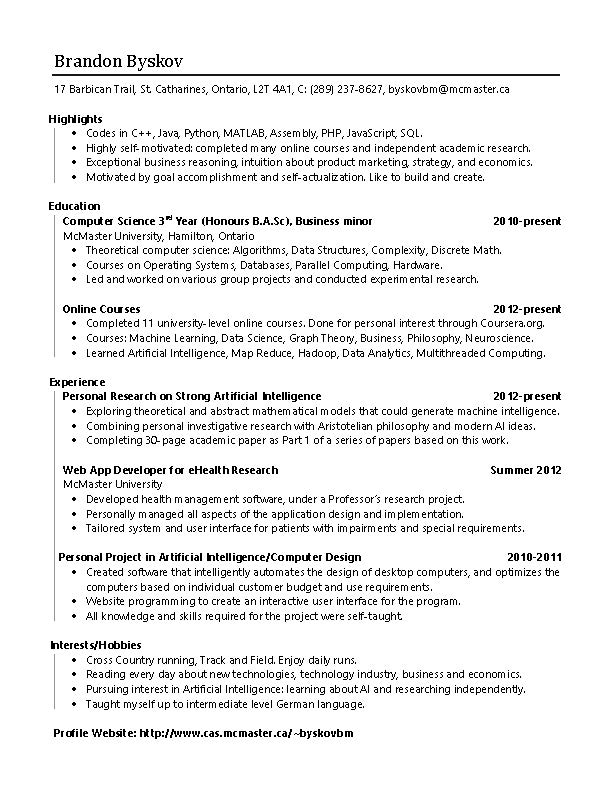

About Me
Facts
- I'm a Haskell programmer with an inclination for writing elegant and well engineered code.
- I have a good business sense, I'm into economics, and there's a place in my heart for capital markets.
- I'm doing artificial intelligence research as a hobby and lifelong project.
- I'm not afraid to tackle hard problems, and I can teach myself anything I need to solve them.
Work
I'm currently open to career opportunities in software development. I'd jump at the chance to work with a functional language such as Haskell, and I'd love to move to a new city or country. I'm a Canadian citizen, so work visas to the United States or Commonwealth countries should be easy to obtain. I'm also eligible to obtain a citizenship in the EU.
Current Work
Haskell Software Engineering Consultant
Started February 2016
I'm working as a remote Haskell consultant on software projects for companies based in the Atlanta, Georgia area. The work involves writing business applications with the Yesod RESTful web framework and a PostgreSQL database.
I've worked as part of a small team on enterprise software for Paces MedEquip LLC. I was responsible for writing new application features and solving git issues independently with minimal support. I'm now working on a document management and templating application for a law firm, which I've been given more responsibility to architect and build by myself.
I've worked as part of a small team on enterprise software for Paces MedEquip LLC. I was responsible for writing new application features and solving git issues independently with minimal support. I'm now working on a document management and templating application for a law firm, which I've been given more responsibility to architect and build by myself.
Past Work
Web App Developer for eHealth Research
McMaster University, Summer 2012
I developed a heart failure health management web app as part of a research project between McMaster University and Hamilton Health Sciences. I worked with professors, doctors, nurses and patients to gather requirements and advised on development options. I was solely responsible for all design, implementation and maintenance tasks for the summer, building front-end, back-end and database code. I conducted live user testing with patients, and the app was later deployed and used by nurses and patients.
Resume
Interests
- I love to run, I try to run every day.
- I really like functional programming. My eyes light up when I see Haskell code.
- I read about technology and business every day for a couple hours.
- I have a strong interest in discrete math and computer science theory.
- I like taking online courses, and lots of them.
- I'm interested in finance and investing, and I do invest a bit when I see a good opportunity.
Projects
Current Projects
Artificial Intelligence Research
November 2012 - Present
I'm working independently on a personal research project on strong artificial intelligence. I'm developing a theoretical model of intelligence and mathematics that could be used in representing a system with general intelligence. I've been exploring works such as those of Aristotle, George Boole, and Alan Turing, incorporating ideas from philosophy, discrete math, and theoretical computer science.
I'm writing a paper on this work, with about 30 pages written currently, as well as many more pages of notes. As it is a long-term project and interest of mine, it will remain work in progress for the foreseeable future.
I'm writing a paper on this work, with about 30 pages written currently, as well as many more pages of notes. As it is a long-term project and interest of mine, it will remain work in progress for the foreseeable future.
Past Projects
CS 4ZP6 Capstone: VNC Viewer in Haskell
School Project, Sept 2014-April 2015
For my final year capstone project, my group of three students, under the supervision of Dr. Wolfram Kahl, built a VNC (Virtual Network Computing) remote desktop viewer in Haskell. A VNC viewer is a client application that allows a user to access and control a remote desktop over a network.
The VNC viewer was written purely in Haskell. We followed the Remote Framebuffer (RFB) protocol and communicated with the server over TCP. We interfaced with the user using the Unix X11 windowing system, using it to display graphics and receive user inputs. I've used the project as a playground to learn Haskell concepts such as monad transformers, typeclasses and concurrent threads.
The whole development process was documented using LaTeX. We generated engineering documents for proposals, requirements, specifications, test plans, test report, and a user guide. We generated source code documentation using literate programming. Several presentations were given throughout the process.
The VNC viewer was written purely in Haskell. We followed the Remote Framebuffer (RFB) protocol and communicated with the server over TCP. We interfaced with the user using the Unix X11 windowing system, using it to display graphics and receive user inputs. I've used the project as a playground to learn Haskell concepts such as monad transformers, typeclasses and concurrent threads.
The whole development process was documented using LaTeX. We generated engineering documents for proposals, requirements, specifications, test plans, test report, and a user guide. We generated source code documentation using literate programming. Several presentations were given throughout the process.
CS 4F03 Distributed Systems: Mandelbox Distributed Rendering
School Project, April 2015
I created an ultra high definition video of a mandelbox, a very complicated mathematical object in space. I was given existing code that could very slowly render a single image of a mandelbox using a ray-tracer. I optimized the performance of the C and C++ renderer and also parallelized the rendering process using OpenMP.
I wrote a separate program in C++ to generate the camera and mandelbox parameters that would describe each frame of the 4 minute video. The mandelbox was made to transform throughout the duration, which made to a very interesting video, but required a collision detection algorithm for the camera that passed thorough and observed the box.
I set up and AWS compute server instance to render the frames and compile them into a video using ffmpeg. The performance optimizations and parallelization made the program 28 times faster on a 32-core machine. I was able to render 7200 frames at 3840x2160 resolution in a time of 8 hours.
I wrote a separate program in C++ to generate the camera and mandelbox parameters that would describe each frame of the 4 minute video. The mandelbox was made to transform throughout the duration, which made to a very interesting video, but required a collision detection algorithm for the camera that passed thorough and observed the box.
I set up and AWS compute server instance to render the frames and compile them into a video using ffmpeg. The performance optimizations and parallelization made the program 28 times faster on a 32-core machine. I was able to render 7200 frames at 3840x2160 resolution in a time of 8 hours.
Profile Page Builder
Summer 2014
As a personal project, I worked on a website that would allow users to create their own profile page. The profile would act as a portfolio of their achievements and professional details. It was modeled after this profile page you're looking at now. It allowed users to add details, links, and files about everything relevant to them.
I originally started the project at a time when I was dissatisfied with LinkedIn's ability to showcase the portfolios and accomplishments of professionals and hobbyists. I discontinued work on the project after the summer. It seems that some of my ideas we're well justified, as LinkedIn has since improved their product to align more closely with my vision.
I originally started the project at a time when I was dissatisfied with LinkedIn's ability to showcase the portfolios and accomplishments of professionals and hobbyists. I discontinued work on the project after the summer. It seems that some of my ideas we're well justified, as LinkedIn has since improved their product to align more closely with my vision.
Book Publishing
2012 - 2014
I've published two philosophy books. I couldn't find affordable or acceptable quality prints of a couple classic philosophy works, so I decided to print them myself. I took the freely available book contents, formatted them in LaTeX, designed the covers in Adobe InDesign, and had them printed at an online self-publishing shop.
This Profile Website!
December 2013
Yes, this website you're looking at right now. I built this profile to showcase myself, my design skills, and to use as a prototype for another project.
CS 4HC3 Human-Computer Interaction: UI experiment
School Project: October - December 2013
I created an HCI experiment that was designed for the McMaster CS 4HC3 class. It tests the readability of different styles and structures in web and application lists. The purpose is to see if there is a good approach to use when designing pages in the modern swiss-style, a style that I see incorporated a lot lately, but not always implemented well. A small group of students participated in the experiment.
Artificial Intelligence: Automated Computer Design
2010 - 2011
My first computer science project. I created a web-based storefront that can design a desktop computer that is personalized to a customer's needs. The website chooses an optimal selection of components based on a customer's usage requirements and budget. This allows mass-customization for each individual customer and also an automated design process that tells the customer what computer is best for them.
(The link below leads to a partially working application, as this server doesn't support PHP)
(The link below leads to a partially working application, as this server doesn't support PHP)
Contact Information
Please get in touch for any reason!
Email
brandonbyskov at gmail.com
Phone
| Cell (preferred) | 1 (289) 237-8627 |
| Home | 1 (905) 680-2135 |
Social Networking
Skills
Programming Languages
- Functional: Haskell, Standard ML, Scala
- Imperative: C++, C, MATLAB, Java, Python
- Web: PHP, JavaScript, HTML, CSS/SASS
- Other: SQL, Assembly
Tools and Frameworks
- Version Control: Git, Subversion
- Distributed Systems: OpenMP, MPI
- Graphics: OpenGL
- Networking: TCP/IP
- Typesetting: LaTeX
- Operating Systems: Linux, Windows
- Build Systems: make, cabal
Learning
School
Computer Science with minor in Business (Honours B.A.Sc.)
McMaster University, 2010 - 2015
I've studied all the usual computer science topics, with particular emphasis on discrete math and CS theory. Some of the major projects I worked on are described in the Projects section of this website. Some notably difficult ones are a VNC remote desktop client written purely in Haskell and a ray-traced mandelbox video that was rendered on an AWS server and parallelized using OpenMP.
I began university in the business program, before deciding to switch into computer science in my second year. I maintain an interest in business and economics and have a completed a minor in business, studying ares such as operations, management, finance, sales and marketing. I've also participated in the McMaster Investment Club.
I began university in the business program, before deciding to switch into computer science in my second year. I maintain an interest in business and economics and have a completed a minor in business, studying ares such as operations, management, finance, sales and marketing. I've also participated in the McMaster Investment Club.
Languages
German, Intermediate level
Started January 2011
I've taught myself an intermediate understanding of the German language using the Rosetta Stone software, online resources, online videos and movies, and friends.
Programming
Project Euler
Started January 2015
I solve Project Euler problems to practice programming and because they're fun to do. I solve these math problems using C++ or Haskell. My code is available on GitHub.

Online Courses

Competative Strategy
Completed August 2013, Coursera.org
This six-week course introduces game theory as a powerful tool to think about business strategy in a systematic way. Participants
learn to identify interdependencies among companies and anticipate the behaviour of competitors in their business decisions.
Computer Networks
Completed September 2013, Coursera.org
This course introduces the fundamental problems of computer networking, from sending bits over wires to running distributed applications, and explores the design strategies used to solve computer networking problems.

Critical Perspectives on Management
Completed March 2014, Coursera.org
This course offers students the opportunity to explore today's management practices from unexpected perspectives in order to ask provocative questions about the modern business environment. This approach allows us to interrogate key management concepts in order to explore the thinking that informs them and, as importantly, the form of capitalism they foster.
Functional Programming Principles in Scala
Completed June 2014, Coursera.org
This course introduces the cornerstones of functional programming using the Scala programming language.
Grow to Greatness: Smart Growth for Private Businesses, Part I
Completed ???, Coursera.org
This Course is based on research and content from the Darden Graduate School of Business MBA course: "Growing an Entrepreneurial Business," and focuses on the common growth challenges faced by existing private businesses when they attempt to grow substantially.
Grow to Greatness: Smart Growth for Private Businesses, Part II
Completed June 2013, Coursera.org
This Course is based on research and content from the Darden Graduate School of Business MBA course: "Growing an Entrepreneurial Business," and focuses on the common human resource challenges faced by private businesses when they attempt to grow substantially.

High Performance Scientific Computing
Completed July 2013, Coursera.org
Programming-oriented course on effectively using modern computers to solve scientific computing problems arising in the physical/engineering sciences and other fields. Provides an introduction to efficient serial and parallel computing using Fortran 90, OpenMP, MPI, and Python, and software development tools such as version control, Makefiles, and debugging.
Internet History, Technology, and Security
Completed August 2013, Coursera.org
This undergraduate (first-year level) course reviews the history of the Internet, explores the technical underpinnings of the Internet and finishes with an overview of how we communicate in a secure manner across the Internet.
Introduction to Data Science
Completed June 2013, Coursera.org
This course covered a broad set of topics critical to practical data science: relational databases, MapReduce, NoSQL, statistical modeling, basic machine learning, and visualization, and a variety of algorithmic topics.

Introduction to Mathematical Philosophy
Completed October 2013, Coursera.org
This course enumerates, and reflects on, various examples of how to apply mathematical methods to philosophical problems and questions.
Introduction to Philosophy
Completed December 2013, Coursera.org
This course provided an introduction to some of the main areas of research in contemporary philosophy. Topics included Epistemology, Philosophy of Science, Philosophy of Mind, Moral Philosophy and Metaphysics.
Machine Learning
Completed November 2012, Coursera.org
This course provides a broad introduction to machine learning, datamining, and statistical pattern recognition.

Nanomanufacturing
Completed October 2014, Stanford Online
This course covers current manufacturing technology and engineering challenges involved in the production of various semiconductor chips and components. It covers LCDs and OLEDs, lithography and patterning, process technology, FinFETs, flash memory, packaging, and 3D ICs.
Social Network Analysis
Completed December 2013, Coursera.org
This course covers the theory and application of network analysis across a range of domains.
External Links
About Me
Current Work
Haskell Consultant
Writing Yesod apps with functional goodness.
Past Work
Web App Developer
Developed health management software for eHealth research project.
Work

Resume
| I like to run :) |
| Functional Programming is Cool! |
| I like learning new things. Online courses are great! |
Interests
| Current Projects: | 1 |
| Past Projects: | 7 |
Current Project
Artificial Intelligence Research
Research on theoretical AI and mathematical models.
Past Project
VNC Viewer in Haskell
Remote desktop client with a touch of lambdas.
Projects
| Ways to get in touch: | 3 |
Contact Information
Languages
Functional: Haskell, ML, Scala
Tools and Frameworks
Distributed Systems: OpenMP, MPI
Tools and Frameworks
Version Control: Git, Subversion
Skills
| Online Courses: | 14 |
| Languages: | 1 |
Online Course
Machine Learning
Completed November 2012, Coursera.org
Online Course
Introduction to Data Science
Completed June 2013, Coursera.org
Learning
External Links